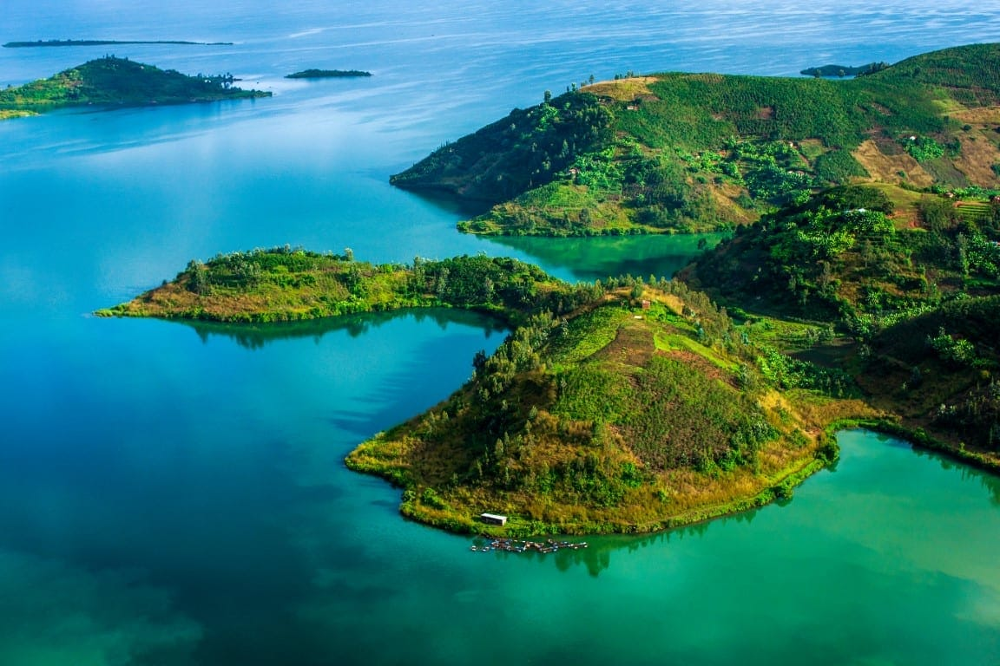

Keep Exploring

Hike Nyiragongo Volcano
One of the most active volcanoes in the world, right at your doorstep.

Plan Your Trip
Visas, transport, currency and local guides everything you need before you arrive in Goma

lake kivu tour in a boat
Africa's deep blue giant boat rides, fishing culture, and golden sunsets over Goma.